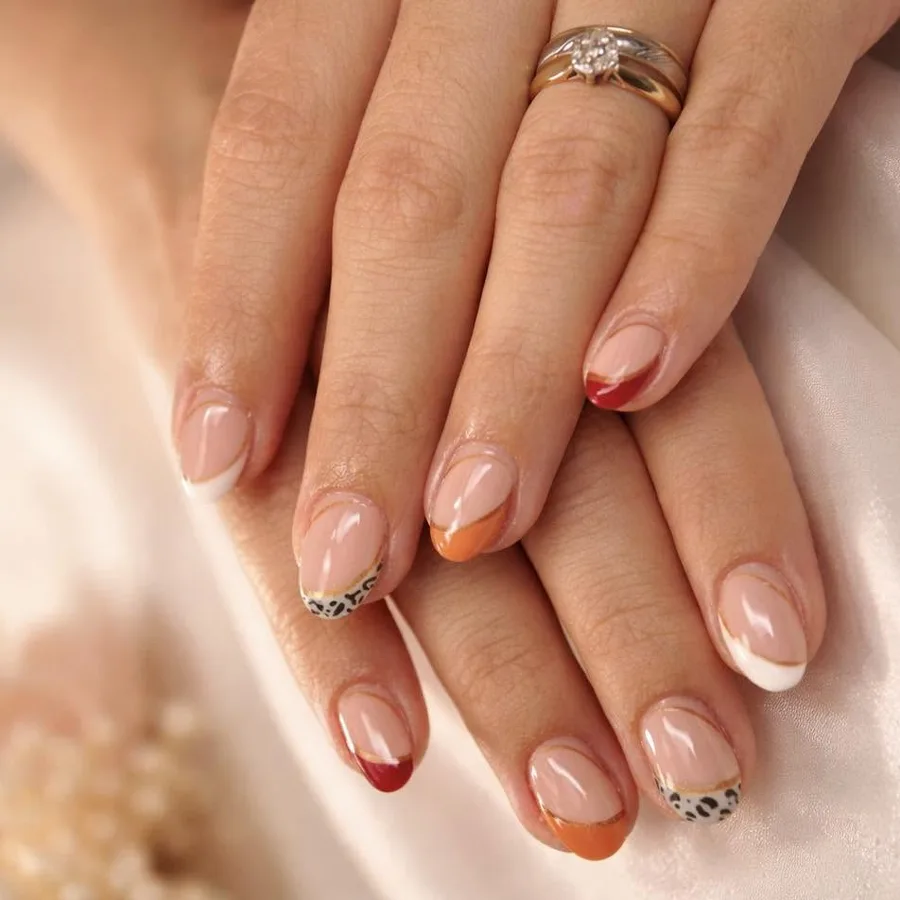
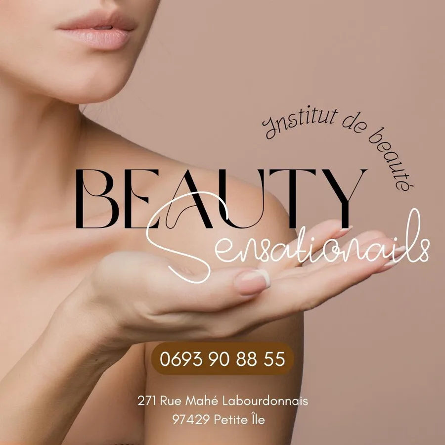

Onglerie
Soins des mains et des pieds, pose semi-permanente, capsules gel : des ongles soignés qui tiennent.
Institut de beauté · Petite-Île
Ongles, cils, sourcils, épilations, soins du visage et du corps : une professionnelle diplômée et passionnée, en plein centre de Petite-Île.

Prestations
Soins des mains et des pieds, pose semi-permanente, capsules gel : des ongles soignés qui tiennent.
Extension de cils et restructuration des sourcils pour un regard mis en valeur naturellement.
Sourcils, lèvres, eye-liner : une mise en beauté durable, réalisée avec minutie.
À la cire ou au fil, pour une peau nette et douce, dans le respect de chacune.
Des soins pour prendre le temps de souffler et retrouver une peau reposée.
Maquillage pour vos événements et cours d’auto-maquillage pour apprendre à vous sublimer.
À l’institut
Chaque cliente a droit à un moment privilégié : les rendez-vous se prennent de préférence par SMS, et l’institut travaille en journée continue pour prendre le temps qu’il faut. Votre avis compte, n’hésitez pas à préciser vos envies.

Offrir pour Noël
Les fêtes approchent : et si vous offriez un moment de soin à quelqu’un qui compte, ou à vous-même ? Contactez l’institut pour en parler.
Rendez-vous
271 rue Mahé Labourdonnais · 97429 Petite-Île
Près de la cave et de la laverie, stationnement à proximité
Rendez-vous de préférence par SMS : 0693 90 88 55